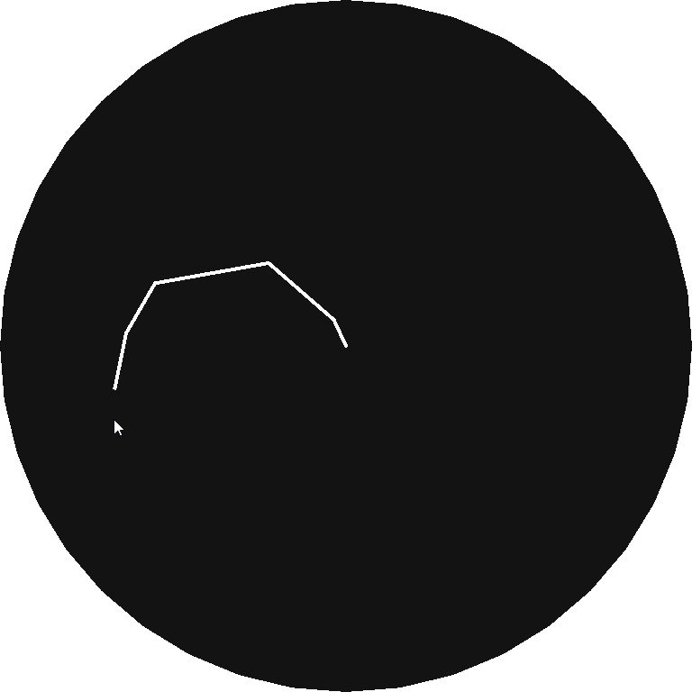

Coding Projects
This is a place for me to post the odd coding projects that I am doing, and explain how I did it for those who want to do it for themselves regardless of the programming language you use. I include all the resources that I used to figure it out, as well as explain it myself. I hope someone finds this helpful.
Cellular Automata Caves
A version of Cellular Automata that can be used for making cave or island shapes. This one isn't too difficult to do, but there are some tricks to it.
It is done by looping through each pixel, and applying the following rule to it. if there are more than the threshhold of the same type pixels ajacent to it (diagonals included), the current pixel is unchanged, if the number of different pixels is more than the threshold, its type is swapped. Set the threshold to 4 or 5 for best results making the shapes above, but some interesting shapes can be made by using other numbers as well. You have to leave a buffer around the edge of the pattern as well, and preform the rule excluding the edge peices. This can also be used to determine what the outside counts as, I generally prefer to leave the edges as 'off'.

The process is started by randomly filling the grid with 'on' and 'off' cells. You can use a random chance (I tended to use 47%) or use some other method like perlin noise to distribute them. Then the above rule is applied multiple times to the cells, 4-5 times is usually enough for decent results but you might want to do it as many as 16 times.
generating_initial_noise = true;
applying_the_rule = false;
repeat ammount_of_detail {
for every_pixel {
if generating_initial_noise {
this_pixel.type = xx%_chance // Chance of being 'on' or 'off'
}
if applying_the_rule {
neighbors = count_ajacent_pixels_of_same(type);
if neighbors > threshold {
this_pixel.type = !this_pixel.type; // Swap the type
}
draw_to_display();
}
}
generating_initial_noise = false;
applying_the_rule = true;
}
Resources
Logistic Map
I spent a few hour's making a program to plot it. It takes the equation
xn+1 = rxn(1 - xn)
or new_value = r * current_value * (1 - current_value)
written in code (a population modelling equation that mostly stabilises as a consistent
value or a cycle of values), and plots the results of a few hundred iterations on one
column of the diagram, and then increases the variable r (the reproductive
number) by a small amount before repeating the process for the next column. The top
variation has the equation plotted only after the results stabilise
( ignore_first_values = true ), and
the bottom version includes the points before the stabilisation as well
( ignore_first_values = false ).

r = 0,
starting_poluation = 0.4, // The starting population doesn't matter too much
graph = new_image(),
ignore_first_values = true;
var i = 0;
repeat ammount_of_columns { // I used 4,700, you can use for loop here instead
var population = starting_poluation;
if ignore_first_values { // This part is optional
repeat a_large_number { // I used 500
population = run_equation(population);
}
}
repeat ammount_of_detail_per_column { // I used 50
population = run_equation(population);
draw_to_image(); // Use i as x and population * something as y
}
r += horizontal_detail; // I used 0.0009
i++;
}
save_the_image();
Resources
Inverse Kinematics (Wiggly Version)
This version of inverse kinematics isn't the most accurate, but it's easier so understand compared to the other version, and has the benefit of being able to bend each individual joint in any direction, at the cost of not being able to control that direction.

It works by looping through each segment from front to back, and for each one, pointing in the direction of it's target (either the main target or the end of the previous segment) and moving one end to meet it there. It then moves the whole thing back to the anchored position.
for i, loop_through_all_segments { // Start with the 'hand' end
update_target_position();
if i != 0 {
set_target_to_the_end_of_next_segment[segment i-1];
}
// Move to where second_end == target
first_end = target - sin/cos(angle_to_target) * segment_length;
second_end = target;
}
find_distance_to_anchor();
loop_through_and_move_everything_back();
draw_each_segment_as_line_from(first_end, to second_end);
Resources
Inverse Kinematics (Fancy Math Version)
This version of inverse kinematics is more complicated to make than the one above, the benifit being that you can flip the direction the arm bends, and it is more accurate than the other version.
This version of inverse kinematics works with Trigonometry, using the Law of Cosines to compute the angles of the joints.
The Law of Cosines says that
θ =
cos -1
(
a2 + b2 - c2
/
2ab
)
where a, b and c are the side lengths of the triangle and θ is the angle. In code it looks like this:
θ = arccos((a^2 + b^2 - c^2) / (2*a*b))
c is the side length opposite the angle you want the a & b can be either of the remaining sides.
I am currently working on this, so the explanation here is not complete yet. I will continue to update this post as I learn for myself how it works.